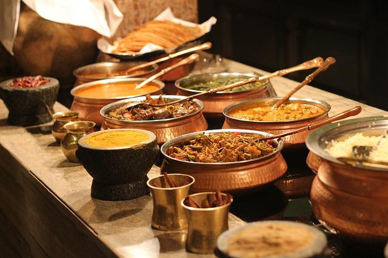
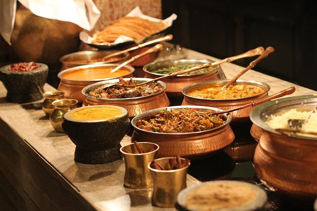
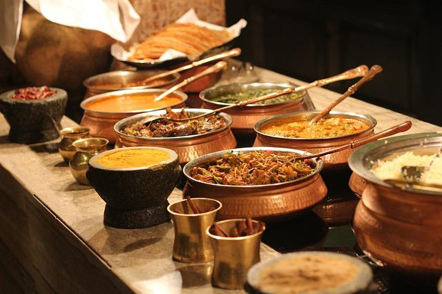

We love eating and drinking together.
After each meeting we check out a local restaraunt and/or bar.


 

We are the model train club of San Pedro, California.
We meet every Thrusday night at 7pm at a club member's house to see his/her model train collection!
Call our club president Cliff to find out where we are meeting this week.
(432)553-5533
Check out these sweet sweet trains!!
"I finally have freiends! I've always thought I was an outcast. I'm not. I just needed to meet train people." - Anna Swift SCUBA instructer/ train club member since 2016
"The world of model trains is so relaxing. I love that this group obeys all the local laws. Ahhh so chill..." -Roberto Diaz Police Officer/ train cluber since 2012
"I come for the cute little trains, but I stay and drain the wine. Party hard and make up elaborate train scenarios with me." -Pam Bradford House Maker/ train club's newest member
After each meeting we check out a local restaraunt and/or bar.
